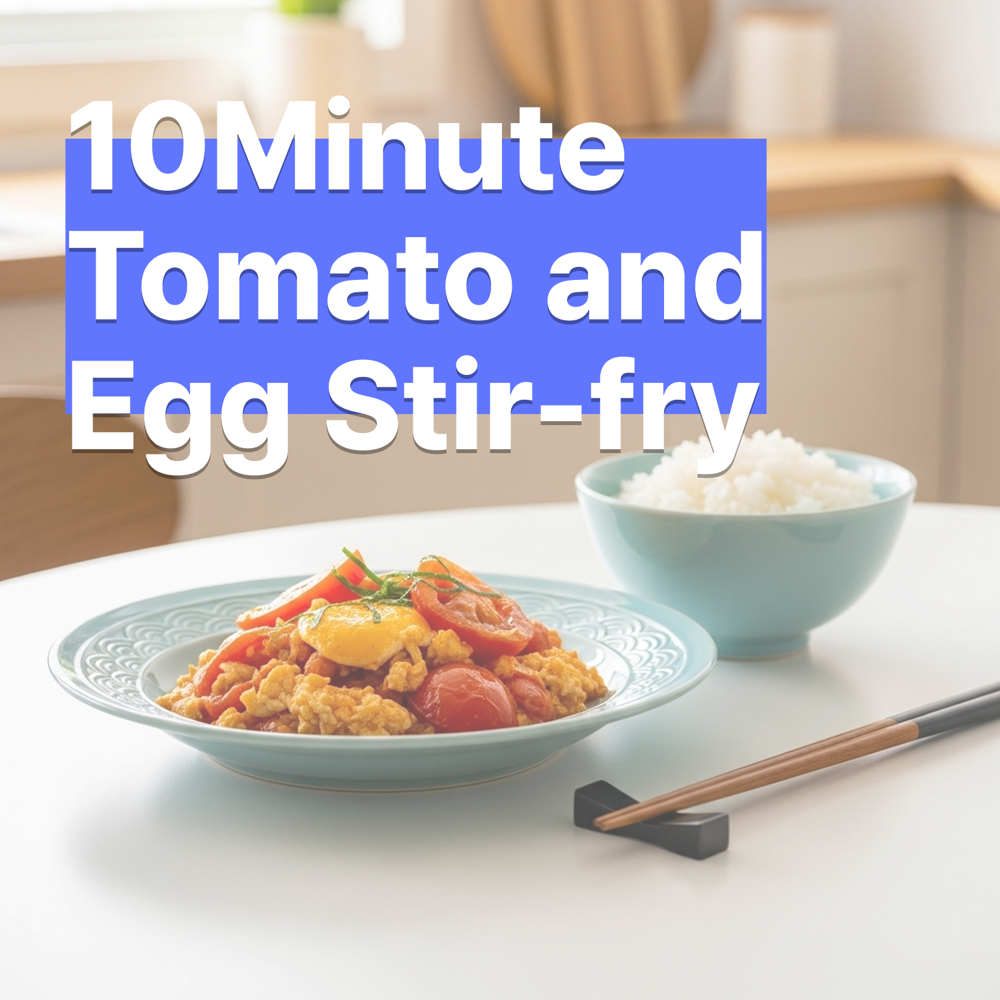

셰프의 비밀 레시피: 10분 완성 토마토 달걀 볶음
2025-07-03

요리하기는 귀찮지만, 맛있는 건 먹고 싶을 때
매일같이 완벽한 요리를 할 순 없죠. 하지만 간단한 재료로도 충분히 훌륭한 한 끼를 만들 수 있습니다. 오늘 제가 공개할 '토마토 달걀 볶음'은 제가 정말 아끼는 비밀 병기랍니다. 10분이면 완성되는 이 요리는, 맛과 영양, 그리고 만드는 즐거움까지 모두 선사할 거예요.
필요한 재료
- 달걀 3개
- 완숙 토마토 2개
- 다진 마늘 1작은술
- 대파 약간
- 식용유, 소금, 후추
만드는 순서
- 토마토는 깨끗이 씻어 큼직하게 썰고, 대파는 송송 썰어 준비합니다.
- 달걀은 그릇에 풀어 소금 간을 살짝 하고 부드럽게 저어주세요.
- 달군 팬에 식용유를 두르고, 다진 마늘과 대파를 넣어 향을 내줍니다.
- 마늘 향이 올라오면 토마토를 넣고 으깨듯이 볶아주세요.
- 토마토가 부드러워지면 한쪽으로 밀어놓고, 다른 한쪽에 달걀물을 부어 스크램블을 만듭니다.
- 달걀이 몽글몽글 익으면 토마토와 함께 섞어주고, 소금과 후추로 마지막 간을 맞추면 완성!
셰프의 팁
밥 위에 덮밥처럼 올려 먹거나, 살짝 구운 빵과 함께 곁들여도 정말 맛있습니다. 취향에 따라 굴소스를 살짝 추가하면 감칠맛이 더욱 살아나요!